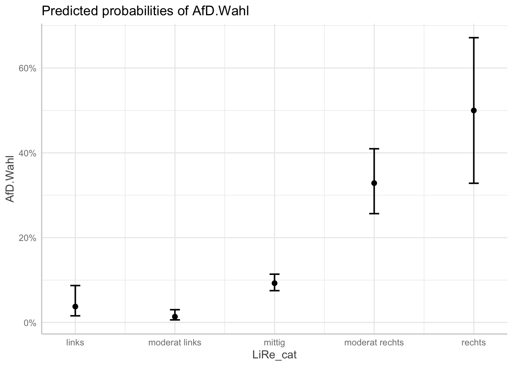
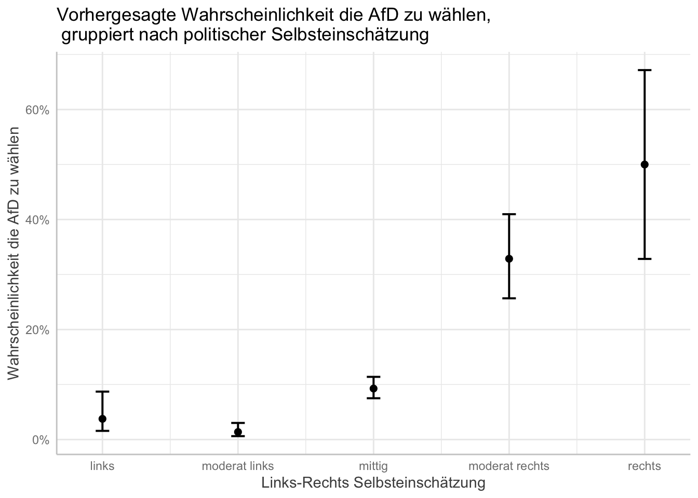
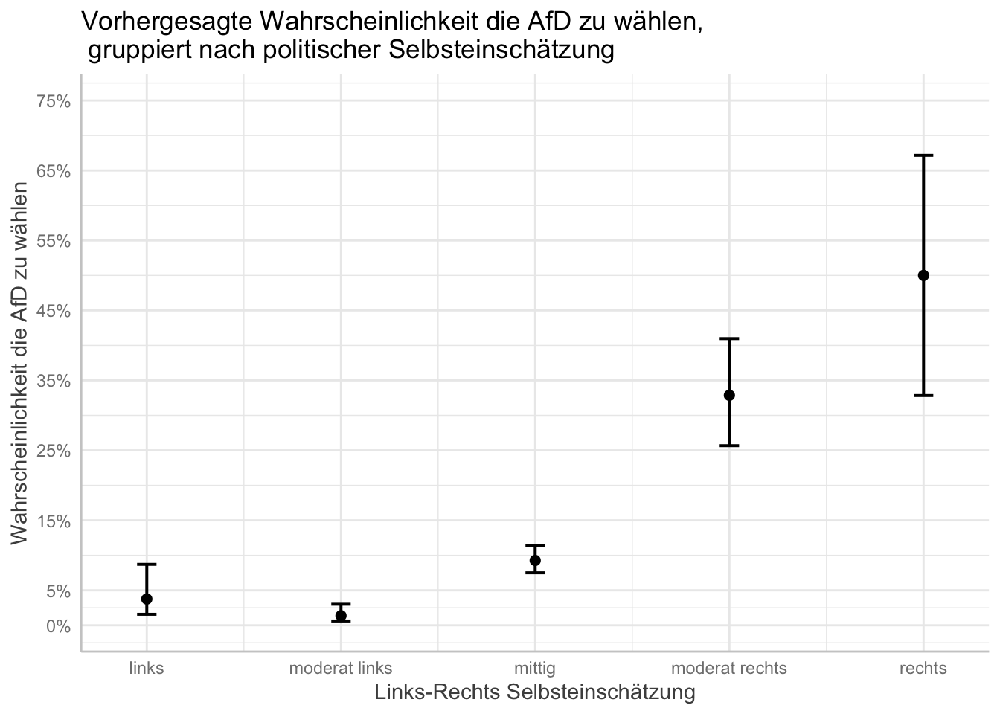

In der achten und zehnten Sitzung haben wir eine lineare Regression gerechnet. Lineare Regressionen sind bei einer stetigen abhängigen Variablen angemessen.
Problematisch wird es jedoch, wenn wir eine dichotom kodierte abhängige Variable haben (mit den Werten 0 und 1). In einem solchen Fall gelten die Grundannahmen von linearen Regressionsmodellen (wie z.B. die Normalverteilung der Residuen oder die Varianzhomogenität) nicht. Eine sehr gängige Möglichkeit sind logistische Regressionsmodelle, die darauf abzielen, die Wahrscheinlichkeiten der Ausprägung (0 oder 1) zu schätzen.
Im Gegensatz zu Regressionskoeffizienten linearer Regressionsmodelle sind solche von logistischen Regressionsmodellen schwierig zu interpretieren. Aus diesem Grund nutzen wir die Effektkoeffizienten (Logits oder Log odds), um so die Wahrscheinlichkeit der Veränderung der abhängigen Variable vorherzusagen, wenn die unabhängigen Variablen um eine Einheit erhöht werden. Diese sogenannten predicted probabilities helfen bei der Interpretation der Koeffizienten und werden mit dem Oberbegriff der quantities of interest überschrieben.
In diesem Tutorial werden wir lernen, wie man eine logistische Regression mit einer binären abhängigen Variable in R berechnet und wie man in einem zweiten Schritt die predicted probabilities berechnet und visualisiert.
Wir laden in einem ersten Schritt die Pakete, die wir für dieses Tutorial brauchen. Anschließend laden wir den GLES-Datensatz und transformieren einige Variablen.
# Pakete laden
library(ggplot2) # für die Visualisierung
library(ggeffects) # für predicted probabilitiesgetwd()
setwd("eigener Pfad")
library(foreign)
gles <- read.spss(file = "ZA6801_de_v4-0-1.sav", to.data.frame = TRUE)
lijphart <- read.csv2("Lijphart_Data_recode.csv")# GLES
# Alter
q2c_num <- as.numeric(as.character(gles$q2c))
gles$alter <- 2017 - q2c_num
# Geschlecht
names(gles)[names(gles) == "q1"] <- "geschlecht"
# Einkommen kategorial
gles$einkommen_cat[gles$q192 == "unter 500 Euro" |
gles$q192 == "500 bis unter 750 Euro" |
gles$q192 == "750 bis unter 1000 Euro"] <- "weniger als 1000"
gles$einkommen_cat[gles$q192 == "1000 bis unter 1250 Euro" |
gles$q192 == "1250 bis unter 1500 Euro" |
gles$q192 == "1500 bis unter 2000 Euro"] <- "1000 bis 1999"
gles$einkommen_cat[gles$q192 == "2000 bis unter 2500 Euro" |
gles$q192 == "2500 bis unter 3000 Euro"] <- "2000 bis 2999"
gles$einkommen_cat[gles$q192 == "3000 bis unter 4000 Euro"] <- "3000 bis 3999"
gles$einkommen_cat[gles$q192 == "4000 bis unter 5000 Euro"] <- "4000 bis 4999"
gles$einkommen_cat[gles$q192 == "5000 bis unter 7500 Euro"] <- "5000 bis 7499"
gles$einkommen_cat[gles$q192 == "7500 bis unter 10000 Euro" |
gles$q192 == "10000 Euro und mehr"] <- "7500 und mehr"
gles$einkommen_cat <- factor(gles$einkommen_cat,
levels = c("weniger als 1000",
"1000 bis 1999",
"2000 bis 2999",
"3000 bis 3999",
"4000 bis 4999",
"5000 bis 7499",
"7500 und mehr"))
# Einkommen numerisch
gles$einkommen_num[gles$einkommen_cat == "weniger als 1000"] <- 1
gles$einkommen_num[gles$einkommen_cat == "1000 bis 1999"] <- 2
gles$einkommen_num[gles$einkommen_cat == "2000 bis 2999"] <- 3
gles$einkommen_num[gles$einkommen_cat == "3000 bis 3999"] <- 4
gles$einkommen_num[gles$einkommen_cat == "4000 bis 4999"] <- 5
gles$einkommen_num[gles$einkommen_cat == "5000 bis 7499"] <- 6
gles$einkommen_num[gles$einkommen_cat == "7500 und mehr"] <- 7
# Wohnort
gles$wohnort[gles$q197 == "Grossstadt"] <- "Großstadt"
gles$wohnort[gles$q197 == "kleine oder mittelgrosse Stadt"] <- "Kleinstadt"
gles$wohnort[gles$q197 == "laendliche Gegend oder Dorf"] <- "Land"
gles$wohnort[gles$q197 == "Vorstadt/ Vorort einer Grossstadt"] <- "Vorstadt"
# Links-Rechts-Selbsteinstufung
gles$LiRe <- as.character(gles$q32)
gles$LiRe[gles$LiRe == "1 links"] <- "1"
gles$LiRe[gles$LiRe == "11 rechts"] <- "11"
gles$LiRe <- as.numeric(gles$LiRe)
# Links-Rechts-Selbsteinstufung aggregiert
gles$LiRe_cat[gles$LiRe >= 1 &
gles$LiRe <= 2] <- "links"
gles$LiRe_cat[gles$LiRe >= 3 &
gles$LiRe <= 4] <- "moderat links"
gles$LiRe_cat[gles$LiRe >= 5 &
gles$LiRe <= 7] <- "mittig"
gles$LiRe_cat[gles$LiRe >= 8 &
gles$LiRe <= 9] <- "moderat rechts"
gles$LiRe_cat[gles$LiRe >= 10 &
gles$LiRe <= 11] <- "rechts"
gles$LiRe_cat <- factor(gles$LiRe_cat,
levels = c("links",
"moderat links",
"mittig",
"moderat rechts",
"rechts"))
# AfD-Wahl
gles$AfD.Wahl[gles$q19ba == "AfD"] <- 1
gles$AfD.Wahl[gles$q19ba != "AfD"] <- 0Für unsere binäre logistische Regression werden wir die Variable AfD.Wahl nutzen. Diese von uns dichotom kodierte Variable gibt an, ob die befragten Personen die AfD gewählt haben oder nicht. Als unabhängige Variable werden wir die Selbsteinstufung der Befragten auf einer Links-Rechts-Skala (LiRe_cat) verwenden, die wir oben als kategorische Variable umkodiert haben. Als ad-hoc Arbeitshypothese nehmen wir Folgendens an: Je eher sich eine befragte Person als politisch rechts einstuft, desto eher wählt diese Person die AfD.
In R rechnen wir eine logistische Regression mit der glm()-Funktion.
Um ein einfaches logistisches Regressionsmodell zu schätzen, modellieren wir unsere abhängige Variable und unsere unabhängige Variable. Als Datensatz verwenden wir gles. Wir speichern das Modell in dem Objekt afd_logit. Zusätzlich teilen wir R mit, dass wir eine binomiale logistische Regression durchführen möchten, indem wir das Argument family auf "binomial" setzen.
afd_logit <- glm(AfD.Wahl ~ LiRe_cat
, data = gles, family = "binomial")Wir nutzen summary() um die Ergenisse zu betrachten.
summary(afd_logit)##
## Call:
## glm(formula = AfD.Wahl ~ LiRe_cat, family = "binomial", data = gles)
##
## Deviance Residuals:
## Min 1Q Median 3Q Max
## -1.1774 -0.4411 -0.4411 -0.1661 2.9293
##
## Coefficients:
## Estimate Std. Error z value Pr(>|z|)
## (Intercept) -3.2426 0.4559 -7.113 1.13e-12 ***
## LiRe_catmoderat links -1.0341 0.6138 -1.685 0.0921 .
## LiRe_catmittig 0.9615 0.4707 2.043 0.0411 *
## LiRe_catmoderat rechts 2.5284 0.4894 5.166 2.39e-07 ***
## LiRe_catrechts 3.2426 0.5841 5.552 2.83e-08 ***
## ---
## Signif. codes: 0 '***' 0.001 '**' 0.01 '*' 0.05 '.' 0.1 ' ' 1
##
## (Dispersion parameter for binomial family taken to be 1)
##
## Null deviance: 1010.6 on 1606 degrees of freedom
## Residual deviance: 861.6 on 1602 degrees of freedom
## (505 observations deleted due to missingness)
## AIC: 871.6
##
## Number of Fisher Scoring iterations: 7Wie schon bei der multiplen linearen Regression werden die Koeffizienten bei der kategorialen Variable LiRe_cat jeweils im Vergleich zur nicht gezeigten Refferenzkategorie “links” berechnet. Im Output sehen wir, dass z.B. im Vergleich zu Personen, die sich als links einstufen, Personen die sich als rechts einstufen eine deutlich höhere Wahrscheinlichkeit aufweisen, die AfD zu wählen. Der zugehörige Koeffizient ist positiv und der p-Wert zeigt, dass der Zusammenhang statistisch hochsignifikant ist (0,00000000283). Dementsprechend können wir daraus schließen, dass die Wahrscheinlichkeit, dass Befragte die AfD wählen, höher ist, wenn sich diese selbst als politisch rechts stehend einstufen. Allerdings können wir die so berechneten Logit-Koeffizienten aufgrund der zugrunde liegenden Logarithmierung nicht bezüglich der Stärke des Zusammenhangs interpretieren.
Um diese Aussagen zur Stärke des Zusammenhangs treffen zu können, bietet es sich an, auf Grundlage unserer Modellergebnisse vorhergesagte Wahrscheinlichkeiten (predicted probabilities) zu berechnen. Dazu wandeln wir die Logit-Koeffizienten in Quoten und dann in Wahrscheinlichkeiten um. Der einfachste Weg ist die Verwendung der Funktion plogis(). Hierfür verwenden wir die Schätzung des Intercept (Achsenschnittpunkt) des Modells, -3.2426, und setzen diesen in plogis() ein:
plogis(-3.2426)## [1] 0.03759371Da unsere unabhängige Variable LiRe_cat eine kategoriale Variable ist, bildet die erste Kategorie dieser Variable (in diesem Fall die Selbsteinstufung als politisch links) den Intercept. Insofern ist die vorhergesagte Wahrscheinlichkeit, dass eine befragte Person, die sich als links einstuft, die AfD wählt, 0,037, also fast 4 %. Das macht Sinn.
Zum Vergleich berechnen wir noch die vorhergesagten Wahrscheinlichkeiten für Personen, die sich als moderat links, mittig und moderat rechts, und rechts einstufen. Dafür addieren wir einfach die Regressionskoeffizienten mit der Referenzkategorie:
# moderat links
plogis(-3.2426 + (-1.0341))## [1] 0.01369817# mittig
plogis(-3.2426 + 0.9615)## [1] 0.09270039# moderat rechts
plogis(-3.2426 + 2.5284)## [1] 0.3286715# rechts
plogis(-3.2426 + 3.2426)## [1] 0.5Dementsprechend sind die vorhergesagten Wahrscheinlichkeiten, dass eine befragte Person die AfD wählt, wie folgt:
| Ausprägung | Ergebnis | Interpretation |
|---|---|---|
| moderat links | 0.01369817 | Die vorhergesagte Wahrscheinlichkeit beträgt 1% |
| mitte | 0.09270039 | Die vorhergesagte Wahrscheinlichkeit beträgt 9% |
| moderat rechts | 0.3286715 | Die vorhergesagte Wahrscheinlichkeit beträgt 32% |
| rechts | 0.5 | Die vorhergesagte Wahrscheinlichkeit beträgt 50% |
Wir sehen also, dass die Wahrscheinlichkeit einer befragten Person, die AfD zu wählen, deutlich steigt, umso “rechter” sich diese Person selbst auf einer Links-Rechts Skala einordnet.
Glücklicherweise gibt es einfachere Wege, die predicted probabilities zu berechnen. Hierfür können wir zum Beispiel die ggpredict()-Funktion aus dem ggeffects-Paket verwenden.
ggpredict(afd_logit, terms = "LiRe_cat") # für die Vorhersage müssen wir unsere unabhängige Variable nochmals nennen## # Predicted probabilities of AfD.Wahl
##
## LiRe_cat | Predicted | 95% CI
## -----------------------------------------
## links | 0.04 | [0.02, 0.09]
## moderat links | 0.01 | [0.01, 0.03]
## mittig | 0.09 | [0.08, 0.11]
## moderat rechts | 0.33 | [0.26, 0.41]
## rechts | 0.50 | [0.33, 0.67]Wie wir sehen, werden uns auch direkt die Konfidenzintervalle angezeigt, die wir für unsere jetzt folgende Visualisierung benötigen.
Die Visualisierung von predicted probabilities realisieren wir auch mit dem ggeffects-Paket (welches auf ggplot2 basiert, das wir deshalb zu Beginn des Tutorials mittels library() geladen haben). Dafür speichern wir unsere Vorhersage, die wir mit der ggeffects()-Funktion berechnen, als eigenständiges Objekt mit dem Namen afd_preds und nutzen die Funktion plot().
afd_preds <- ggpredict(afd_logit, terms = "LiRe_cat")
plot(afd_preds)
Den Graphen können wir mit den bekannten Funktionen von ggplot2 verändern:
# Titel und Achsenbeschriftung
plot(afd_preds) +
labs(x = "Links-Rechts Selbsteinschätzung"
, y = "Wahrscheinlichkeit die AfD zu wählen"
, title = "Vorhergesagte Wahrscheinlichkeit die AfD zu wählen,\n gruppiert nach politischer Selbsteinschätzung") # "\n" befiehlt R einen Absatz einzufügen
Das Aussehen bzw. die Skala der y-Achse verändern wir mit den Argumenten breaks und limits. Diese bestimmen, welche Schritte auf der y-Achse gemacht werden sollen und den minimalen und maximalen Bereich der y-Achse.
plot(afd_preds
, breaks = c(0, .05, .15, .25, .35, .45, .55, .65, .75)
, limits = c(0, .75)) +
labs(x = "Links-Rechts Selbsteinschätzung"
, y = "Wahrscheinlichkeit die AfD zu wählen"
, title = "Vorhergesagte Wahrscheinlichkeit die AfD zu wählen,\n gruppiert nach politischer Selbsteinschätzung") # "\n" befiehlt R einen Absatz einzufügen
Logistische Regressionsmodelle helfen uns dabei eine dichotom kodierte abhängige Variable und deren Effekt auf weitere unabhängige Variablen zu erklären. Logit Modelle zielen darauf ab, die Wahrscheinlichkeiten der Ausprägung (0 oder 1) zu schätzen.
Im Gegensatz zu Regressionskoeffizienten linearer Regressionsmodelle sind solche von logistischen Regressionsmodellen schwierig zu interpretieren. Aus diesem Grund nutzen wir die Effektkoeffizienten (Logits oder Log odds), um so die Wahrscheinlichkeit der Veränderung der abhängigen Variable vorherzusagen, wenn die unabhängigen Variablen um eine Einheit erhöht werden. Diese sogenannten predicted probabilities helfen bei der Interpretation der Koeffizienten und werden mit dem Oberbegriff der quantities of interest überschrieben.
glm() berechnet ein logistisches Modell, summary() erzeugt einen anschaulichen Output, während ggpredict() und plogis() die Regressionskoeffizienten in Wahrscheinlichkeiten umwandeln. Abschließend lassen sich mit plot() und ggpredict() aus dem Paket ggeffects die Regressionsergebnisse sinnvoll plotten.
Bearbeiten Sie bitte die folgenden Aufgaben bis zur kommenden Sitzung: